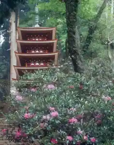
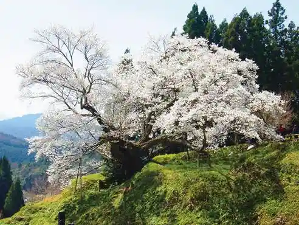
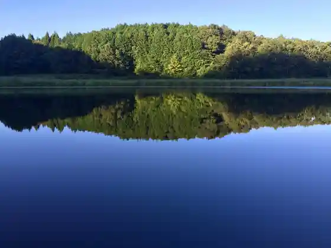
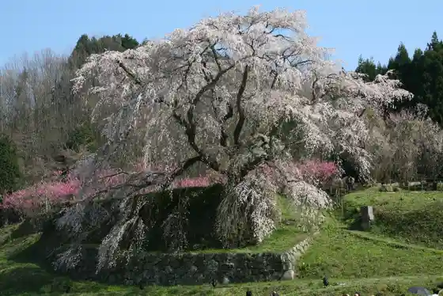

Ryuketsu Shrine
Uda, Nara · 0745-93-2177 · Official / source link
Muro Tera
Uda, Nara · 0745-93-2003 · Official / source link

Butsuryuji
Uda, Nara · 0745-82-2457 · Official / source link

Ryuogafuchi
Uda, Nara · 0745-82-2457 · Official / source link

Matabe Sakura (Hongo no Taki Sakura)
Uda, Nara · 0745-82-2457 · Official / source link

Ono Tera
Uda, Nara · 0745-92-2220 · Official / source link
U Ta Suibun Shrine (Uda Usagi Tano)
Uda, Nara · 0745-84-2613 · Official / source link
Ryu Chin Gorge
Uda, Nara · 0745-82-2457 · Official / source link
Myo Kichijo Ryuketsu
Uda, Nara · 0745-82-2457 · Official / source link
Uda Matsuyama
Uda, Nara · 0745-83-2251 · Official / source link
Yatagarasu Shrine
Uda, Nara · 0745-82-2046 · Official / source link
Uda · Animaru Park
Uda, Nara · 0745-87-2520 · Official / source link
Sumi Saka Shrine
Uda, Nara · 0745-82-0114 · Official / source link
Kagirohi no Oka Manyo Park
Uda, Nara · 0745-82-3674 · Official / source link
Kai Cho Tera
Uda, Nara · 0745-82-2457 · Official / source link
Nara Kaede no Sato Hirara
Uda, Nara · 0745-84-2888 · Official / source link
Roadside Station Uda Michi Muro
Uda, Nara · 0745-97-2200 · Official / source link
Miroku Magai Hotoke (Ono Tera)
Uda, Nara · 0745-92-2220 · Official / source link
Taigan Tera
Uda, Nara · 0745-83-0325 · Official / source link
Haibara Tori Miyama Park
Uda, Nara · 0745-82-3674 · Official / source link
Uda Heisei Haibara Kodomo no Mori Park
Uda, Nara · 0745-82-7411 · Official / source link
Uda Rekishi Bunka Kan (Kusuri no Kan)
Uda, Nara · 0745-83-3988 · Official / source link
Roadside Station Uda Michi Dai Uda Akino Yado
Uda, Nara · 0745-83-0051 · Official / source link
Aki Shrine
Uda, Nara · 0745-83-3168 · Official / source link
Furusato Genki Village
Uda, Nara · 0745-93-4400 · Official / source link
Suibun Shrine (Uda Dai Uda)
Uda, Nara · 0745-83-2251 · Official / source link
Yatsu Bo Sugi
Uda, Nara · 0745-84-2521 · Official / source link
Uda Megumi Bi Su Shrine
Uda, Nara · 0745-83-2251 · Official / source link
Soja Suibun Shrine
Uda, Nara · 0745-84-2484 · Official / source link
Anzan Tera
Uda, Nara · 090-3268-5859 · Official / source link
Machinami Gyararii Ishi Kei Iori
Uda, Nara · 0745-87-2022 · Official / source link